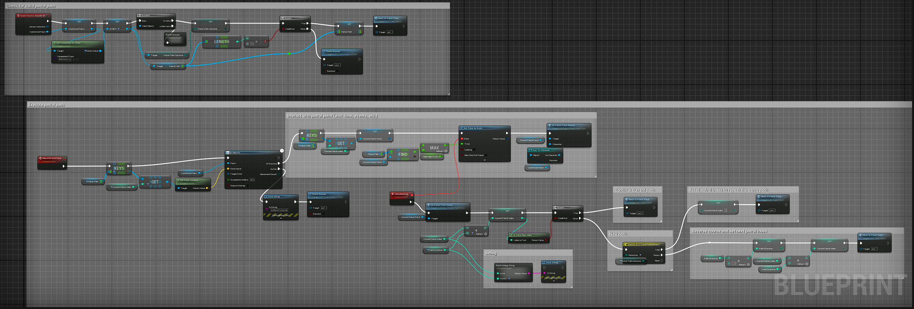

I'm a first-gen college grad with a BS in Computer Science and Japanese, working until recently as a production engineer at Bungie where I supported ICs with walk-up tools support, training, documentation, ad-hoc activity scripting, playtesting, bug burndown, and workflow automation to ease the burden of monotonous and repetitive tasks. I also applied my previous tutoring experience to do code reviews. One of my favorite projects that I was a part of until Bungie's reduction-in-force was helping with the implementation of Bungie's new encryption tech, protecting new mechanics and story beats from would-be dataminers. Outside of my official role, I held the voluntary position of co-lead of Pride@Bungie, Bungie's LGBTQ+ ERG.
With my degree and experience in gaming, I hope to do work that sparks joy. I enjoy working with others in a way that promotes collaboration and and celebrates community while creating products and services that do the same.
Some of My Projects
UE5 NPC Patrol Example
Click "View" for a video to see an NPC following a patrol path. The patrol points are AI objects as well and they tell the patroller which way to face once they reach the point. It can be toggled whether or not the patroller repeats the loop, reverses the loop, or stops. It's only me working on this, but I'm still using P4 for version control just to be thorough.
NPC Behavior Tree
Essentially, the NPC patrols if they're currently unaware of the player. It moves to a random spot if the patrol is broken.

Patrol Task in Detail
Here's the blueprint for the BTTask itself. It starts by checking for a valid patrol path and then kicks off the main patrol event, which loops until broken by some stimuli (the player).
Upon reaching the patrol point, the BTTask checks how long the NPC should wait at that point and which direction it should face. Once done waiting, the NPC either continues to the next point or, if at the end of the path, checks to see whether it should restart, return, or stop.
UE5 NPC Chase and Search Example
Click "View" for a video to see the NPC following the player. At the time of recording, the NPC AI uses UE5's sight, sound, touch, and prediction perception sense to determine the player's current and last known location. I'm currently working on a "take cover" behavior tree using UE5's EQS system, but I don't have that integrated into the main patrol behavior yet.
Perception Handling
The perception handling stuff is all pretty similar, so here's Sight as an example. Validate that the stimulus is the right kind, set the behavior tree's TargetActor to the player, and then use the prediction sense to track the player's actual location up to a variable maximum (default is 1 second).
❮
❯
Legend of the Cats
This Roblox game is a project that I've been working on with one of my students for the past several months, who has been kind enough to let me share this here with you. I guess you could say he's the Creative Director and I'm the CTO of the project. Click the thumbnail to check out a video or see the Roblox page here.
The core gameplay loop revolves around rescuing, capturing, unlocking, and upgrading different types of cats in a fantasy setting. The source code is private within Roblox's built-in source control, but I'm happy to talk about it.
Stable Algorithms
This is a game made for kids to practice basic arithmetic.
Click the thumbnail for a demo and then see the Java source code here.
This project was done as part of a group exercise with the goal of, beyond making a functional game, taking turns leading daily SCRUM meetings and getting familiar with agile methodology.

Terrain / Map Generation
This is a 2D map / terrain generation project I've been working on in Unity. I used Perlin Noise generation to create biomes and scripted tiles that were smart enough to know which sprite to use based on their biome and neighbors. Try it out in your browser!
I add to this project when I have free time, so watch this space! Big thanks to Pipoya and MrWolfyer over on itch.io for publishing the art and UI assets I used.
Parallel vs. Sequential Matrix Multiplication
This is a more academic project analyzing the relative speed-up gained from parallelizing an algorithm with a lot of work to do.
Check out the C source code here along with a more detailed description of my process here.
A* Pathfinding Visualization
This is a visualization for A* algorithm that demonstrates the pathfinding process with different colors on a grid. Click the thumbnail for a video then see the Python code here.
Get In Touch
I'd love to hear from you!
{kind=link}
{kind=link}
{kind=link}
{kind=link}